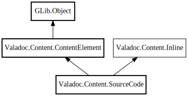

SourceCode
Object Hierarchy:

Description:
public class SourceCode :
ContentElement,
Inline
Content:
Enums:
Properties:
Creation methods:
Methods:
- public override void accept (ContentVisitor visitor)
- public override void accept_children (ContentVisitor visitor)
- public override void check (Tree api_root, Node container, string file_path, ErrorReporter reporter, Settings settings)
- public override ContentElement copy (ContentElement? new_parent = null)
- private string? get_path (string path, Node container, string source_file_path, ErrorReporter reporter)
- public override bool is_empty ()
- private inline bool is_empty_string (string line)
- private void load_source_code (string _path, Node container, string source_file_path, ErrorReporter reporter)
- private string strip_code (string code)
Fields:
Inherited Members:
All known members inherited from class Valadoc.Content.ContentElement
All known members inherited from class GLib.Object